University of Memphis (UofM)
3720 Alumni Avenue, Memphis, TN 38152, USA
https://www.memphis.edu/
Former doctoral student and lecturer in the Institute for Intelligent Systems (IIS) and the Department of psychology at the University of Memphis.
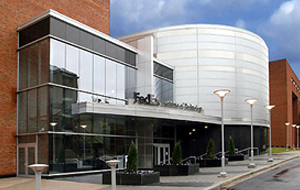
Research
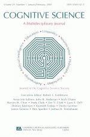
-
Louwerse, M. M., Dale, R., Bard, E. G., & Jeuniaux, P. (2012). Behavior matching in multimodal communication is synchronized. Cognitive Science. 1-23. http://doi.org/10.1111/j.1551-6709.2012.01269.x
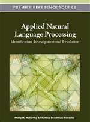
-
Jeuniaux, P., Olney, A., & D'Mello, S. (2012). Practical programming for applied natural language processing. In P. M. McCarthy & C. Boonthum (Eds.). Applied Natural Language Processing and content analysis: Identification, Investigation, and Resolution. Hershey, PA: IGI Global. http://doi.org/10.4018/978-1-60960-741-8.ch008
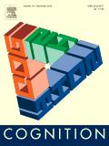
-
Louwerse, M. M., & Jeuniaux, P. (2010). The Linguistic and Embodied Nature of Conceptual Processing. Cognition, 114, 96-104. http://doi.org/10.1016/j.cognition.2009.09.002
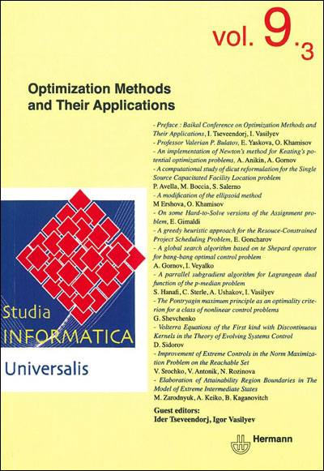
-
Bellissens, C., Jeuniaux, P., Duran, N. D., & McNamara, D. S. (2010). A text relatedness and dependency computational model: Using Latent Semantic Analysis and Coh-Metrix to predict self-explanation quality. Studia Informatica Universalis, 8 (1), 85-125. https://dblp.org
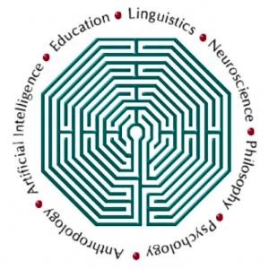
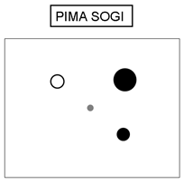
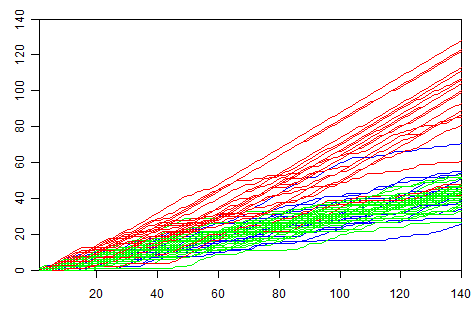
-
Jeuniaux, P., Dale, R., & Louwerse, M. M. (2009). The role of feedback in learning form-meaning mappings. In N.A. Taatgen & H. van Rijn (Eds.), Proceedings of the 31th Annual Conference of the Cognitive Science Society.
-
Louwerse, M. M., Benesh, N., Watanabe, S., Zhang, B., Jeuniaux, P., & Vargheese, D. (2009). The Multimodal Nature of Embodied Conversational Agents. In N.A. Taatgen & H. van Rijn (Eds.), Proceedings of the 31th Annual Conference of the Cognitive Science Society.
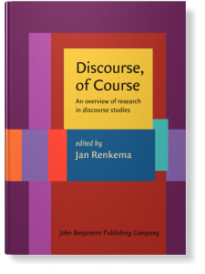
-
Louwerse, M. M., & Jeuniaux, P. (2009). Computational psycholinguistic techniques to measure cohesion in discourse. In J. Renkema (Ed.), Discourse of course. Amsterdam: Benjamins. http://doi.org/10.1075/z.148.21lou
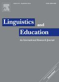
-
Louwerse, M. M., Crossley, S., & Jeuniaux, P. (2008). What if? Conditionals in educational registers. Linguistics and Education, 19, 56-69. http://doi.org/10.1016/j.linged.2008.01.001
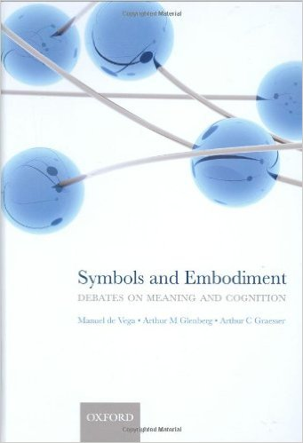
-
Louwerse, M. M., & Jeuniaux, P. (2008). Language comprehension is both embodied and symbolic. In M. de Vega, A. Glenberg, & A.C. Graesser (Eds.), Symbols, embodiment, and meaning: A debate (pp. 309-326). Oxford: Oxford University Press. http://doi.org/10.1093/acprof:oso/9780199217274.003.0015
-
Louwerse, M. M., & Jeuniaux, P. (2008). How fundamental is embodiment to language comprehension? Constraints on embodied cognition. In B. C. Love, K. McRae, & V. M. Sloutsky (Eds.), Proceedings of the 30th Annual Conference of the Cognitive Science Society (pp.1313-1318). Austin, TX: Cognitive Science Society.
-
Louwerse, M. M., Jeuniaux, P., Zhang, B., Wu, J. & Hoque, M.E. (2008). The interaction between information and intonation structure: Prosodic marking of theme and rheme. In B. C. Love, K. McRae, & V. M. Sloutsky (Eds.), Proceedings of the 30th Annual Conference of the Cognitive Science Society (pp.1984-1989). Austin, TX: Cognitive Science Society.
-
Bellissens, C., Jeuniaux, P., Duran, N. D., & McNamara, D. S. (2007). Towards a textual cohesion model that predicts self-explanations inference generation as a function of text structure and readers' knowledge levels. In D. S. McNamara & J. G. Trafton (Eds.), Proceedings of the 29th Meeting of the Cognitive Science Society (pp. 815-820). Austin, TX: Cognitive Science Society.
-
Louwerse, M. M., Benesh, N., Hoque, M.E., Jeuniaux, P., Lewis, G., Wu, J., & Zirnstein, M. (2007). Multimodal communication in face-to-face conversations. In D. S. McNamara & J. G. Trafton (Eds.), Proceedings of the 29th Annual Cognitive Science Society (pp. 1235-1240). Austin, TX: Cognitive Science Society.

-
Louwerse, M. M., Cai, Z., Hu, X., Ventura, M., & Jeuniaux, P. (2006). Cognitively inspired natural-language based knowledge representations: Further explorations of latent semantic analysis. International Journal of Artificial Intelligence Tools, 15, 1021-1039. http://doi.org/10.1142/S0218213006003090
-
Louwerse, M. M., Graesser, A.C., McNamara, D.S., Jeuniaux, P., & Yang, F. (2006). Coherence is also in the eye of the beholder. In Silva, M. & Cox, A. (Eds.), Proceedings of the Cognitive Science Workshop "What have eye movements told us so far, and what is next?" London: University College London.
-
Louwerse, M. M., Jeuniaux, P., Hoque, M.E., Wu, J., & Lewis, G. (2006). Multimodal communication in computer-mediated map task scenarios. In R. Sun & N. Miyake (Eds.), Proceedings of the 28th Annual Conference of the Cognitive Science Society (pp. 1717-1722). Mahwah, NJ: Erlbaum.
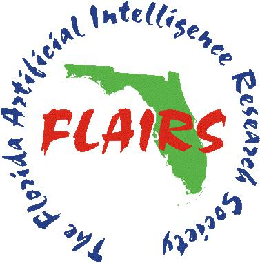
-
Louwerse, M. M., Cai, Z., Hu, X., Ventura, M., & Jeuniaux, P. (2005). The embodiment of amodal symbolic knowledge representations. In I. Russell & Z. Markov (Eds.), Proceedings of the 18th International Florida Artificial Intelligence Research Society (pp. 542-547). Menlo Park, CA: AAAI Press. https://dl.acm.org/doi/book/10.5555/2685833
— 16 September 2023